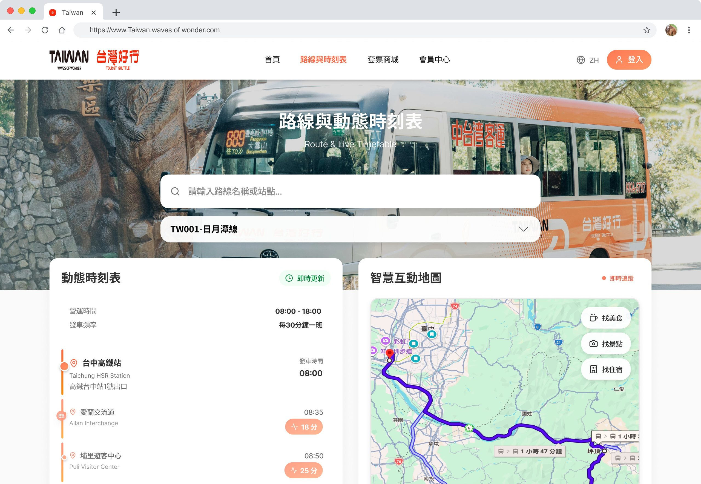
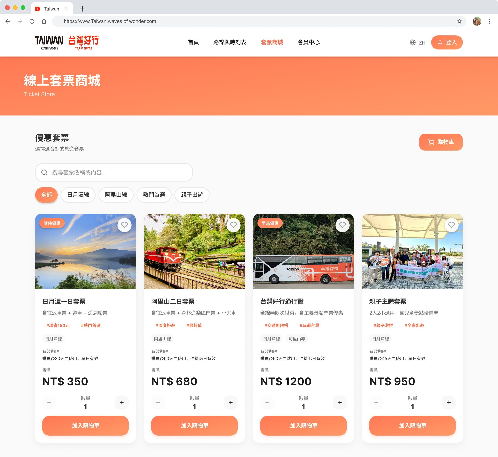
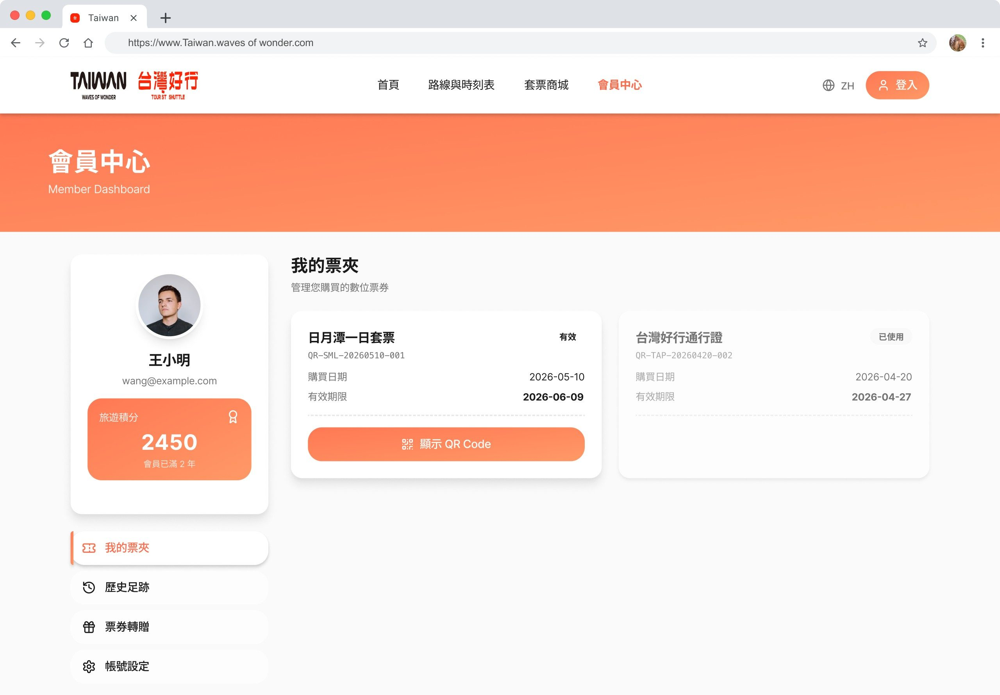

台灣好行 RWD
公共交通旅遊網站重設計，把時刻表查詢、即時路線地圖、線上購票與會員票夾整合成一致的體驗，確保旅客從規劃行程到搭車購票，在手機、平板與桌機都能維持同一套操作邏輯。
從查路線到刷票上車，讓同一套設計語言走完整趟旅程。

專案總覽
台灣好行 RWD 最初是一個以公共交通旅遊服務為主題的響應式網站重設計專案，聚焦在旅客用手機查找路線、時刻表與票價時的體驗。隨著設計反覆迭代，範圍逐漸擴大到即時路線地圖、線上購票商城與會員票夾——讓專案從單純的資訊型網站，變成一套涵蓋「查詢、追蹤、購票、管理票券」完整旅程的響應式服務。目標始終不變：同一套內容在手機、平板與桌機上都能維持清楚一致的操作邏輯，而不是單純把桌機版縮小。
問題
台灣好行是提供旅客串連景點的公共交通服務。第一版重設計解決了手機版資訊層級混亂的問題，但隨著購票、會員與即時追蹤功能陸續加入，也連帶出現新的落差：部分畫面沿用舊的視覺語彙，跨裝置之間的品牌識別與版面邏輯不一致，購票與會員資訊也分散在不同流程裡，旅客得在多個頁面之間來回切換才能完成一趟行程的規劃與搭乘。
跨裝置與版本一致性
早期畫面與後期新增的購票、會員功能使用不同的視覺語彙與導覽邏輯，同一個網站在不同裝置上看起來像兩套系統。
查詢、購票、會員資訊分散
時刻表查詢、購票與會員票夾原本是三個獨立流程，旅客規劃行程、購票到搭車後查票，中間需要來回切換頁面。
公共服務可及性
使用族群橫跨不同年齡層，需兼顧清楚的字級對比與操作可及性，尤其在購票與付款流程中更不能造成操作疑慮。
研究
以現有台灣好行官網與專案自身早期畫面為對象進行可用性走查，並用 ChatGPT 模擬不同旅客情境（首次到訪的自由行旅客、行前規劃並登入會員的回頭客、上車前臨時查詢即時路線的旅客），比對走查結果與情境模擬之間的落差，找出真正卡住旅客的環節。
視覺語彙不同步
購票商城與會員中心是後期加入的功能，沿用了較舊的紅色系介面，與首頁、路線頁的新版橙色系品牌不一致，容易讓人誤以為離開了官方網站。
購票與行程規劃斷裂
旅客在路線頁面查到想去的景點後，得離開頁面重新到套票商城搜尋對應行程，兩邊的路線與景點名稱也沒有互相連結。
高齡與低頻使用者的操作門檻
公共服務網站的使用族群橫跨不同年齡層與熟悉度，付款與會員頁面的表單欄位、按鈕間距若不夠寬鬆，容易造成誤觸或放棄購票。
設計策略
根據走查結果整理出三個設計原則，作為視覺統一、跨裝置版面與購票流程決策的依據。
全站統一設計系統，不分先後期功能
重新梳理色彩、按鈕與卡片樣式，讓首頁、路線查詢、購票商城與會員中心共用同一套橙色品牌語彙，不再有新舊介面並存的落差。
路線與購票雙向串接
路線頁面直接帶出對應套票與推薦行程，購票商城也能依路線篩選，減少旅客在頁面之間來回搜尋。
對比與觸控目標優先於精緻裝飾
字級對比與按鈕尺寸符合無障礙標準，付款與表單欄位加大觸控熱區，優先服務最多元的使用族群。
關鍵決策
| 全站視覺統一 | 把購票商城、會員中心從舊有紅色系介面，重新套用首頁與路線頁的橙色品牌系統，統一按鈕、卡片與標籤樣式，消除跨頁面的品牌落差。 |
|---|---|
| 即時路線地圖與動態時刻表 | 路線頁加入即時追蹤地圖與動態時刻表卡片，讓旅客能同時看到目前車輛位置與各站預估到達時間，取代原本只能查詢固定時刻表的做法。 |
| 線上購票與電子票夾 | 套票商城支援分類篩選、購物車與多種付款方式；購買後的票券自動存入會員中心的電子票夾，以 QR Code 呈現，不需要另外列印或翻找訂單信件。 |
| 景點與路線雙向串接 | 路線頁附上沿線景點與推薦套票，景點與套票也各自連回對應路線，讓旅客在規劃與購票之間不必重新搜尋。 |
| 無障礙與可及性 | 提高本文與按鈕的對比度並放大觸控熱區，付款表單加上明確的欄位標籤與安全提示，因應公共服務網站橫跨不同年齡層使用者的需求。 |
跨裝置呈現
首頁採用同一套設計系統延伸至手機、平板與筆電，統一後的品牌色彩與版面邏輯確保三種裝置呈現一致的第一印象。


關鍵畫面
從即時路線地圖、線上購票商城到會員電子票夾，皆沿用同一套橙色品牌語彙，補齊先前版本新舊介面並存的落差。



驗證
沒有正式的跨裝置測試資源，驗證方式聚焦於實機走查與自我檢核：在手機、平板、筆電三種實際裝置上重新測試路線查詢、購票與會員查票等關鍵流程，並對照 WCAG 對比度標準逐一檢查文字與按鈕配色，同時確認全站色彩與元件樣式是否統一。
反思
透過重新規劃資訊架構、統一先前版本累積下來的視覺落差，並把路線查詢、購票與會員票券串成同一套流程，讓旅客在手機上也能快速完成從查路線到刷票搭車的完整任務。這個專案也讓我更清楚，公共服務類網站的重設計不只是一次性的版面調整，而是要在功能持續擴充的過程中，持續回頭檢查一致性與可及性。